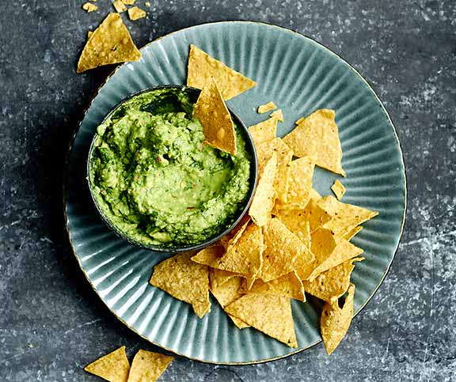
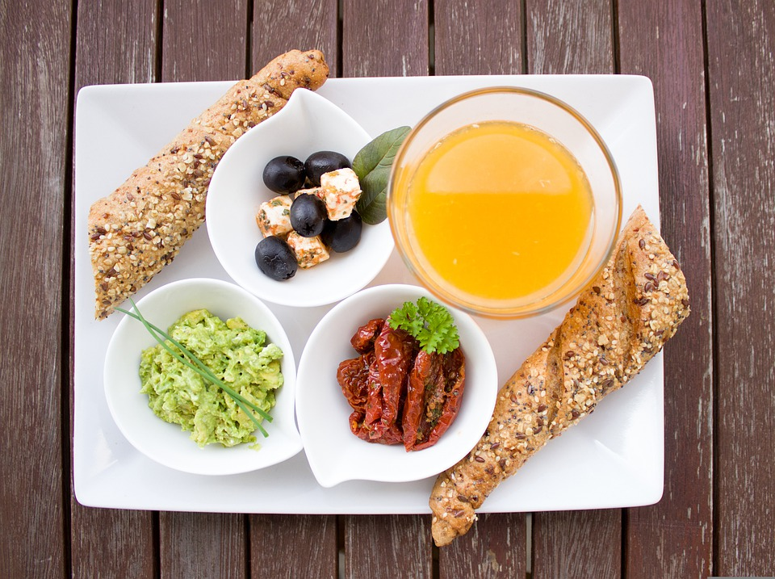

Guacamole
Guacamole ist ein Avocado-Dip aus der mexikanischen Küche.
Das Wort Guacamole stammt von dem Nahuatl-Wort ahuacamolli, was so viel wie „Avocadosauce“ bedeutet,
zusammengesetzt aus āhuacatl („Avocado“, wörtlich „Hoden“) + molli („Soße“, wörtlich „Gebräu“).
Sie ist auch in der Tex-Mex-Küche beliebt und verbreitet.
Zutaten:
- 2 Avocados
- 1 Knoblauchzehe
- 1 rotert Chili
- 0.5 Bund Koriander
- 3 EL Limettensaft
- 0.75 TL Salz
Zusammensetzung und Verwendung
Die Guacamole besteht aus zerdrücktem oder püriertem Fruchtfleisch reifer Avocados, Zitronen- oder Limettensaft, gehacktem Korianderkraut und Salz.
In manchen Rezepten werden der Guacamole Pfeffer, Zwiebeln, Knoblauch, grüne Chilis oder Tomatenwürfel zugefügt. Die Creme wird zum Beispiel zu Taquitos, Tortilla-Chips oder als Beilage zu Fleisch gegessen.
Ähnliche Zubereitungen sind Avocadosalate.
Durch die in Avocados enthaltene Polyphenoloxidase (PPO) färbt sich Guacamole ungeschützt rasch braun.
Durch Zugabe von Zitronen- oder Limettensaft kann dieser Prozess verlangsamt werden, am effektivsten ist es jedoch, die Guacamole luftdicht mit Frischhaltefolie abzudecken.
Mit einer Hochdruckbehandlung lässt sich das Enzym PPO inaktivieren. Vakuumverpackt lässt sich Guacamole so ohne Bräunung über mehrere Wochen aufbewahren.
 
GUACAMOLE BEILAGEN: UNSERE 10 EMPFEHLUNGEN
- Die beliebteste Guacamole Beilage in unseren Breiten ist der Taco Chip.
Anstelle der Maischips kannst du aber auch Gemüsechips selbst im Kontaktgrill braten und dazu reichen. Rote Beete, Pastinaken und Karotten bieten sich an.
- Puristen essen ihre Guacamole mit Gemüsesticks aus Zucchini, Selleriestangen, Paprika und Chicorée.
- Wer es deftig mag, kann als Beilage zu Guacamole auch Ofengemüse servieren.
- Salatwraps sind ketogene Beilagen zu Guacamole. Gegrilltes Hähnchenfilet in Salat wickeln – fertig!
- Zu Guacamole passen hart gekochte Eier. Du kannst dafür gerne die Eigelbe aus dem gestockten Eiweiß holen und anstelle mit Guacamole auffüllen.
- Gebackenes Gemüse ist eine Beilage, um auch Kinder in den Genuss von Guacamole zu bringen. Blumenkohl, Broccoli oder Kohlrabi sind unsere Favoriten.
- Guacamole wird gerne als Aufstrich angesehen, passt also auch zu Brot. Dünn geschnittenes Nussbrot oder ketogenes Baguette kurz geröstet, auch Ciabatta solltest du versuchen.
- Sommerlich leicht präsentiert sich Ceviche zur Guacamole. Versuche diese auch mit Süßwasserfischen wie Forelle oder Hecht.
- Guacamole kann wunderbar mit Obst. Ob frisch aufgeschnitten oder kurz gegrillt, Ananas, Melonen aller Art oder Mangos sind eine fruchtige Ergänzung.
- Kaltes Roastbeef gewickelt um längliche, gelbe Tomaten oder Paprikastreifen ist eine gute Beilage zu einer herzhaft scharfen Guacamole.
|